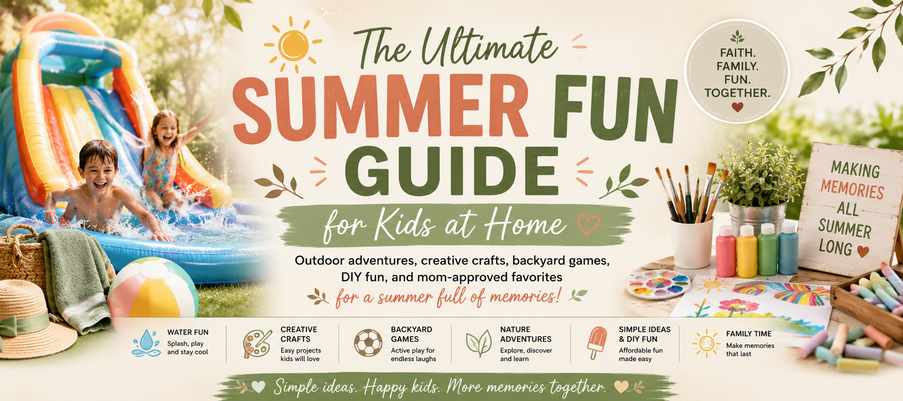

Welcome! This guide is filled with simple outdoor activities, backyard adventures, DIY crafts, family games, and trusted Amazon favorites to help you create an unforgettable summer without leaving home.
Cool off, stay active, and make unforgettable summer memories right in your own backyard. These simple activities are easy to set up, fun for a wide range of ages, and perfect for sunny days at home.
These are some of our family's favorite products for backyard water fun. They're durable, kid-approved, and help make summer days even more memorable.